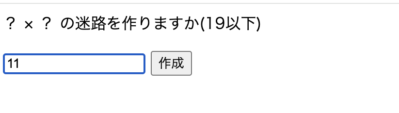
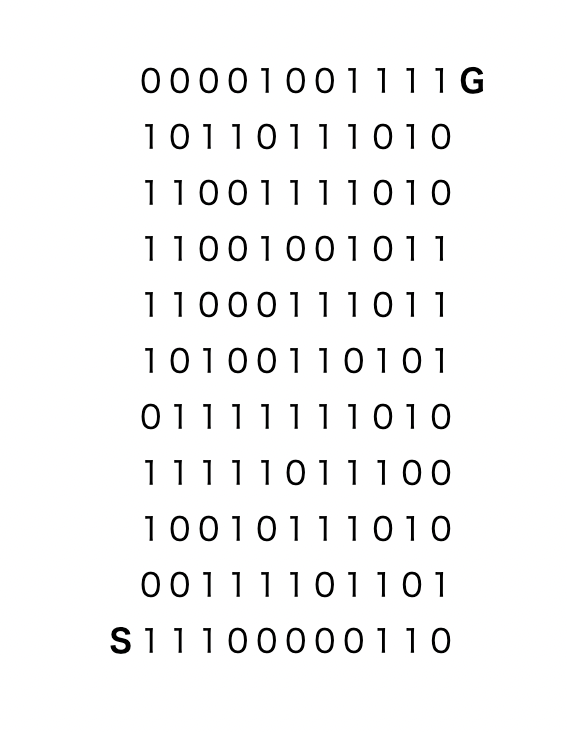

戻る
迷路
【内容】
(入力数値 × 入力数値)マスの迷路を作成する。
0は通れず1が通れる仕様で、左や下に曲がる複雑性はなし。
作成するとは名ばかりでSからGにつながる道を作るプログラミングという方が正しい。

【構成】
(入力数値 × 入力数値)の数の分だけInteger型のArrayListに「2」を代入する
スタート位置だけ「1」を代入する
↓
0か1はMathクラスのrandomメソッドで決める
スタートの次の進める位置(2箇所)がどちらも0の場合はやりなおし、
どちらも1の場合は上が優先される。
↓
左や下に進まないため
最上段に来たら右に進むだけ、最右列に来たら上に進むだけ(上に1を代入し続ける)となる。
それ以外の箇所は上か右方向のどちらかに「1」が出るまでwhile文で無限ループする、
をGにたどり着くまで繰り返す。

【工夫や学び】
次作の迷路は左や下にも進む仕様にしたのだが、
それと対比するとなんとも簡単な仕様である。
特に今作は「1」が出るまで無限ループして道を確実に切り開くため、
上に進んだら右のルートはもう関係がなくなってしまう。
また最後に関与しなかった「2」に0か1をランダムに割り当てるため、
意図せず複数の答えルートができてしまう可能性が残ってしまっている。